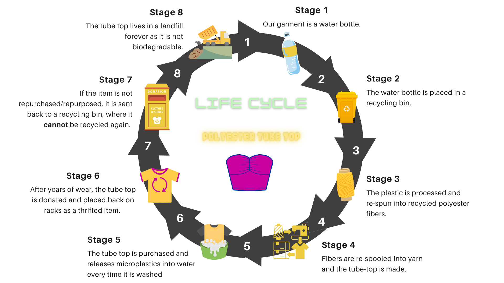
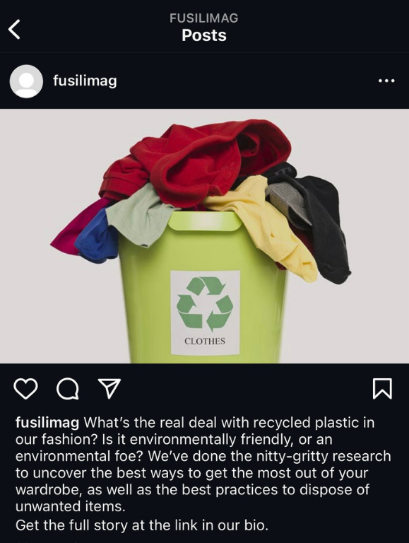

Fashion is an art, and we know it.
Clothes of unique styles and colors are a way to express our personality and make a statement. But did you know that beyond your style, your wardrobe may reflect a situation many brands prefer to keep quiet about?
That's right—we're talking about polyester, and it's impact on the environment.
Unraveling the Thread
If the label says your garment is made of 100% cotton, linen, silk, wool, or a blend of any of these, it is probably one of your favorite pieces of clothing, right? The reason for this is because it is made of natural fibers. You may already know this because who doesn't love clothing that feels good?
What about 50/50, 70/30 or 80/20?
For your pocket, it meant that you bought that item for much less than other garments you have made of 100% natural fiber. For you, it meant the best way to own that clothing you liked so much.
So, what exactly is the problem with polyester?
Sometimes brands don't tell us the whole story. We want you to know it all!
Polyester is a kind of plastic. Its technical name is polyethylene terephthalate (PET). Since it's a synthetic fiber, it doesn't come from a plant like cotton. Polyester is made from petroleum-based chemicals
Since polyester is plastic, it is considered non-biodegradable. Polyester never disappears; it just gets smaller and smaller.
What's behind recycled polyester?
Many brands have made statements about their fabrics and how they are switching to climate-friendly materials. Even though this sounds good (it is good to move away from virgin polyester!) for materials to be climate friendly, they should not create a new problem for our environment, right?
Life Cycle of a Recycled Polyester Tube Top
Stage 1. Our garment begins far from thread—in fact, it's currently enjoying a scorching day on the beach, shoved inside an ice chest. That's right: our garment is a water bottle, for now.
Stage 2. After a long day of hydrating, the water bottle is rehomed from the ice chest to the recycling bin.
Stage 3. The water bottle is then sanitized, shredded into small fragments, and melted down, the plastic is re-spun into recycled polyester fibers. These fibers are valued by companies for being cheap to produce, durable, and high-performance.
Stage 4. Once re-spun and spooled into a usable yarn, our tube top finally takes shape and finds its place on a clothing rack.
Stage 5. Fast forward a few weeks, and our garment has found a home in a very cozy closet. With every washing cycle the tube top takes, it releases a slew of microplastics into the water.
Stage 6. After being worn for a couple years, our garment begins to show some wear, but because it is still “wearable,” it is donated rather than trashed. Once back on the racks, the tube top is only given passing glances, as it has become a second rate, “untrendy” item.
Stage 7. Once its time in the thrift store has come to an end, the tube top ends up back in the bin—however, unlike its original water bottle form, its recycled polyester form cannot be recycled again.
Stage 8. The traits that once made our garment ideal, like its durability, are now a detriment. Once in the landfill, our tube top will keep its form for decades, maybe even centuries, as it is not a biodegradable product.
How to recycle polyester?
You can dispose of recycled polyester (rPET) clothes in a few ways.
Donating to thrift stores is the first choice of many when faced with discarding unwanted, lightly used clothing.
But what about clothes that are beyond wearing? You can repurpose old t-shirts by cutting them up and using them as rags!
Finally, there are businesses that seek out old clothing items, turning them from flop to hot—turning unwearables into home insulation!
You Can Make an Impact
While no one can change the fashion industry on their own, everyone can "vote with their dollar" by checking those labels and buying fewer clothes made out of polyester.
However, the biggest impact you can make is by spreading the word and letting your friends know about the negative environmental impacts of polyester. And we're making it easy for you to do! Repost Fusilli! mag on your socials:
We are Fusilli!
Fusilli! produces stories for young women who are into fashion and current events. As a magazine that regularly discusses environmental issues, we are paperless for the most part. To appease fans of physical magazines, Fusilli! releases one special issue per year, compiling top stories, exclusive print-only content, and notes from the editors. All other issues are released online, and the audience is reached through social media, email, and text.

© 2024 Fusilli!